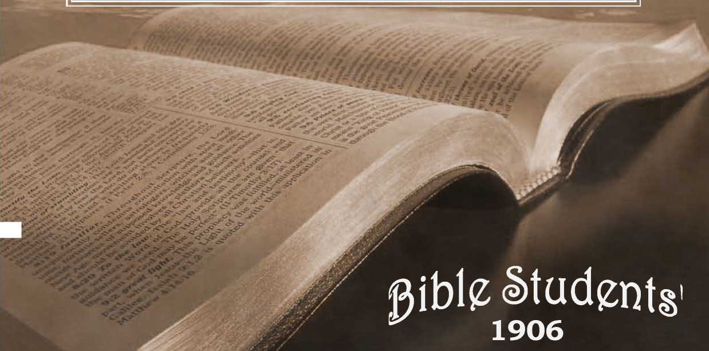

No. 73—The Scripture Teaching on Calamities and Why God Permits Them
on
Calamities
and
*^Ay Qcd permits ^he
“Inquire for the old paths''—Jer. 6:16.
WATCH TOWER BIBLE & TRACT SOCIETY, BROOKLYN, N. Y., U.S. A.
No. 73 —APRIL, igos.
, — FOR. THE —-
PROMOTION OF CHRISTIAN KNOWLEDGE.
v PUBLISHED BY THE
NO. 37. HOW READK5T THOU ? NO. 38. HOPE OF IMMORTALITY.
NO. 40. WHAT IS THE SOUL? NO. 52. OUR LORD'S RETURN.
NO. 49. WHICH IS 1HE TRUE GOSPEL?
NO. 53- THE WAGES OF SIN. IS DEATH AND NOT STERNAr TORMENT
NO. 54. A DARK CLOUD AND ITS SILVER LINING
NO. 59. THE WORLD’S HOPE. NO. 60. BRINGING BACK THE KING.
NO. 6l. PROTEST A NTS, AWAKE !
no. 63. christ’s death : one opportunity for every man.
no. 66. DO you KNOW ?
NO. 69. STUDY TO BE APPROVED. CHRISTENDOM IN GRAVE DANGER. REFRAIN FROM WEEPING. HOPE FOR THE NON-ELECT.
NO. 70. CHEERFUL CHRISTIANS.. DIVINE PREDESTINATION.
NO. 71 THY WORD IS TRUTH.
NO. 72 TO HELL AND BACK. THE GREAT PRISON-HOUSE TO BE DESTROYED.
THE OATH-BOUND COVENANT. SELLING THE BIRTHRIGHT.
NO. 73. CALAMITIES AND WHY GOD PERMITS THEM.
NO. 74 THE DIVINE PLAN.
NO. 75. INCREASING INFLUENCE OF SPIRITISM.
NO. 76. EARTHQUAKES IN PROPHECY. TONGUES OF FIRE. IN THE EVIL DAY.
CLEANSING OF FLESH AND SPIRIT.
NO. 77. GOD’S UNSPEAKABLE GIFT.
NO. 78, PHYSICAL HEALTH PROMOTED BY RIGHTEOUSNESS. IESUS, THE WORLDS GREAT SIN-BEARER.
NO. 79. THE LOST KEY OF KNOWLEDGE. WHAT WOULD SATISFY JESUS FOR HIS TRAVAIL OF SOUL?
NO. 80. THE HOPEFUL AND THE HOPELRSS. SEVEN WOMEN DESIRE ONE HUSBAND. MILLENNIAL MORNING DOWNING. THE RANSOM PRICE GUARANTEES A MILLENNIAL AGE OF RESTITUTION.
NO. 8l. THE LORD’S RETURN. GATHERING THE LORD’S JEWELS.
Nos. 38, 40, 59, 62 and 66 can be had in Swedish.
Nos. 38, 53 and 66 can be had in Dano-Norwegian.
Nos. 38, 40, 49, 53, 59, 61, 66 and 74 can be had in German.
Iios. 52, 53, 58 and 59 can be had in French.
Nos. 38, 40, 49, 53, 59 and 66 can be had in»Greek, and 66 in Hollandish
Extra copies of the above tracts will be supplied free, on application, to subscribers; or a single sample to any one. Thus many may be coworkers with us and with Godin scattering the Truth—-“the hail.”—Isa. 28/17. Hundreds of thousands are being circulated thus, the funds being supplied by voluntary contributions from those whose hearts and heads have been refreshed by these “glad tidings of great joy which shall be unto all people.”
BOOKLETS
what’say the scriptures about hell?—88 pages. Also in German, Swedish French and Greek, io cents each.
what SAY the scriptures about spiritism?—128 pages. Also in German. IOC. tabernacle shadows of better sacrifices. Ill.—130 pp. Also in German and Swedish. 10 cents each.
the wonderful story, “theold, old story.” Illustrated.—60 pp.
THY WORD IS TRUTH. A REPLY TO INGERSOLL. 48 pp. 5C.
the bible vs.the evolution theory. 48 pp. Also inGerman andFrench. 5c. the parousia of our lord. 78 pp. Also in Swedish and French. 5c.
epistle to the Hebrews. Illustrated.—64 pp. In Yiddish, only. 5c.
BIBLE HOUSE, BROOKLYN, N. Y., U.S.A. *
BRITISH BRANCH, 24 EVfeRSHOLT ST., LONDON N. W.
“EXCEPT YE REPENT, YE SHALE ALL LIKEWISE PERISH/’
“ There were present at that season some who told him of the Galileans, whose blood Pilate had mingled with their sacrifices. And Jesus answering said unto them Suppose ye that these Galilaans were sinners above all the Galileans, becatise they suffered such things? I tell you, Nay ; but except ye repent, ye shall all likewise perish.
“ Or, those eighteen, upon whom the tower of Siloam fell, and slew them, think ye that they were sinners above all men that dwelt in Jerusalem ? I tell you, Nay; but, except ye repent, ye shall all likewise perish."—Luke 13:1-5.
HOULE and good in the sight of both God and man are "the generous impulses of charity and sympathy, awakened by great calamities in recent years. And when
■—> this is said, it leaves little more of good to be said favorable to calamities or their influence.
While these charities should not be miscontrued to signify that God’s consecrated saints are rapidly multiplying—for many of the charitable are not the consecrated, and some are even infidels,—yet they are an evidence that at least some of the original God-likeness of our race remains; that it has not been wholly obliterated by the degradation of the fall, nor wholly poisoned by the bad theology of the dark ages. While we live in a period, perhaps, as selfish and money-loving as any known to history, yet millions of dollars are generously poured forth to aid suffering humanity. And yet many who in times of calamitous distress show that they have a tender spot somewhere in their hearts, would and do at other times lend time and brain and skill to the arts of war, and in designing the most horrible implements of warfare; and on occasions when bitter passions are aroused would relentlessly and pitilessly slaughter a thousand times as many as meet death by the accidents of nature. Yet, for all this showing of the two ele-
<»>
merits in the same men, we rejoice that the God-like element of sympathy exists, as a partial offset to the devilish qualities of selfishness and heartlessness, which, under the degrading influence of man's fallen state, have grown strong during the past six thousand yeaas.
Preparatory to looking carefully, reasonably and Scriptur-ally at the question, Why does God permit calamities? let us note some of the absurd views of some Christian people, who should know God’s Word and character much better than they seem to know them. Some, whose hearts in the presence ot great calamities overflow with sympathy and God-like love (which proves their hearts better and more sound than their theology), declare that God is the director and cause of all disasters and troubles. Hence, whatever men may do to alleviate such distresses would, according to this false view, be so much done in opposition to God ; and whatever love and sympathy they feel, is so much sentiment opposed to God’s sentiments,—which are thus made to appear malicious.
But it seems a very slight thing to charge the Almighty with causing earth’s calamities,—in comparison with the general thought of Christendom, that God has premeditated, planned, from before the foundation of the world, their everlasting torture;—the direst calamity imaginable. A tornado, an earthquake, an epidemic of disease, would be mercies and kindnesses in comparison to such diabolical schemes and preparations as are accredited to the Lord by the vast majority of his children, who suffer still from the superstition, ignorance and blindness of the “dark ages,” and its creeds. Alas, that such false conceptions of the justice and love of our Creator should ever have gained a foothold in oun, minds—to distort our every conception of every right and good quality. O Lord, grant thy people a great opening of the eyes of their understanding, that we may be able to comprehend with all saints.— the lengths and the breadths, the heights and the depths of thy love and mercy toward thy creatures—through Christ Jesus our Lord 11 The difficulty is that men have been led to consider the very Bible which declares God’s true character of love and justice as authority for these devilish doctrines; and these false interpretations were originated in the “dark ages” by those who instigated or.assisted in burning, and otherwise tormenting, real Bible believers.
COD’S SYMPATHY—HOW SHOWN.
When we declare that whatever there is of love and sympathy in man is only the remnant of the original divine like-Hess in which Adam was created, not wholly effaced by six thousand years of degradation in sin, it at once raises the question: In what way does God manifest his sympathy and love in such emergencies, when even the hearts of fallen human beings are touched, with sympathy and love,— to acts of kindness and succor?
A correct answer is, that God is represented in every act of kindness done, whether by his children or by the world; because their actions under su_h circumstances are the result of their possession of some measure of his character and disposition. This answer is not full enough to be satisfactory; but, thank God, a fuller investigation, in the light of his Word, reveals a boundless sympathy on his part,—providing an abundant succor, which is shortly to be revealed.
But why does not God immediately succor his creatures from calamities? Or, to go still further back, why does he, who has all wisdom to know and all power to prevent, permit calamities.—cyclones, earthquakes, tidal-waves, destructive floods, pestilences, etc.? And while we are about it, we may as well include all the evils which God could prevent, if he would—all the forms of sickness and pain and death; every manner of destruction—wars, murders, etc.: every thing which causes pain or trouble to those willing to do and to be in harmony with God? The answer to one of these questions will be the answer to every question on the subject; for all human evils are related and have a common source *or cause.
To comprehend this cause fully, we must go far back, to the very beginning of sickness, painj. death and sorrow.—to the Garden of Eden, where neither famine, pestilence, cyclone, earthquake, nor death in any form was permitted; where man and his surroundings and conditions were pronounced “very good.” even by God himself, and must certainly have been greatly appreciated by man. who had to be driven out and prevented from returning by the fiery sword which kept the way of access to the life-sustaining fruits of the trees of the garden.
And this Creator, who so graciously provided for the life and comfort of his creatures, and who communed with them and gave them his blessing and the promise of everlasting life upon the sole condition of continued obedience,—how came it that he should so change in his attitude toward his creatures as to drive them from the enjovments of those Eden comforts and blessings, out into the unprepared earth—to toil and weariness and insufficient sustenance, and thus to death?
We must remember that the Creator specially or miraculously “prepared” in advance the Garden of Eden. only, for man’s comfortable enjoyment of the favors of life, and a fitting place for his trial. God foresaw the fall of his creature, and provided that the penalty of sin, “dying thou shalt die,” instead of being suddenly inflicted, as by a lightning stroke or other speedy method, should be served out gradually by conflict with the unfavorable conditions (of climate, sterility of soil, storms, miasma, thorn's, weeds, etc.,) of the unprepared earth; the preparation of which would require sewn thousand years more to entirely fit it for the habitation of perfect, obedient, human children of God.
MAN A CONVICT.
Adam and Eve, therefore, went forth from Eden convicts, under sentence of death; self-convicted under the most just of all judges, their Creator and friend. The convicts esteemed it a mercy to be let die gradually rather than suddenly; while to the Creator and Judge this was expedient because of his plan for their future, in which such experience with imperfect conditions would be of great value;—a plan for the increase of the race, and for its discipline and final redemption and restoration.
The death penalty, inflicted in this manner, God foresaw would, through experience, furnish man such a lesson on the exceeding sinfulness of sin and its baneful results as would never need to be repeated;—a lesson, therefore, which would profit all who learn it to all eternity; especially when Christ’s Millennial reign of righteousness shall manifest in contrast the fruits of righteousness. God also designed that the exercise of man’s mental faculties in coping with the disturbances and imperfections of his surroundings and in inventing reliefs, and the exercise of his moral faculties in combating his own weaknesses, and the calls upon his sympathy, should prove beneficial.
Had the sentence of God (in addition to a loss of Eden's comforts and experience with sin and death ) condemned his creatures.to an eternity of torment and anguish, as so many now believe and teach, who could defend such a sentence, or call the Judge just, or loving, or in any sense good? Surely no one of a sound mind 1
But when it is seen that the Scriptures teach that death (extinction), and not life in torment, was the penalty pronounced and inflicted, all is reasonable. God has a right to demand perfect obedience from his perfect creature when placed under perfect conditions, as in Adam’s case. And the decree that none shall live everlastingly except the perfect, is both a wise and a just provision for the everlasting welfare of all God's creatures.
There is a depth of meaning in the Creator's words, as he sent forth his fairly tried and justly condemned creatures, among the thorns and briars, to labor and pain, and sorrow, and disease, and to be subject to the casualties and calamities of nature’s unfinished work. He said:—“Cursed is the ground for thy sake.’” >■ e., The earth in.general is in its present imperfect condition for your profit and experience; even though you may not esteem it so. Adam would have sought to retain continual access to the garden fruits, to avoid severe labor and to enable him to fully sustain his vital powers and live forever; but in loving consideration for man’s ultimate good, no less than in justice, and in respect for his own sentence of death, God prevented this and guarded the way back to the garden, in order that the death sentence should not fail of execution, in order that sinners should not live forever and thus perpetuate sin.
The children of the condemned pair inherited their fall, imperfections and weaknesses, and also the penalties of these; for “who can bring a clean thing out of an unclean?” The whole race, therefore, as convict laborers, have not only been learning what sin and evil are, and their undesirable results, but by their labor and skill they are serving to prepare the earth and bring it as a whole to the full perfection designed for it, and illustrated in the condition of Eden—ready for a further purpose of God of which none but his children (and not all of them) are made aware through the Scriptures.
We can see, then, that labor and toil were prescribed for man’s good. They have kept him so employed that he could not plan and consummate evil to the same extent that he otherwise would have done. And as the earth becomes more fertile, approaching perfection, man’s vitality becomes less; so that now, with greater leisure to plot and scheme and grow wise in evil, the period of life in which to do so is shorter. What a mercy in disguise is present shortness of life, under present circumstances! Were some of our “shrewd business men” who accumulate millions of money, and grasp great power in a few short years, to live 930 years, as Adam did, what might we expect but that one man. or at most a syndicate or trust, would own every foot of land, control- every drop of water and every breath of air, and have the rest of the race for their dupes and slaves?
God’s action, then, in exposing his creatures to death, pain and various calamities, it must be seen was, first of all, one which related only to his present life on earth, and to no other; for of any continuance of life, in any other locality, God did not give him the slightest intimation. On the contrary, th? words of the penalty were: “Dust thou art and unto dust shalt thou return,”—“dying thou shalt die.”—Gen. 3:19; 2:17, margin.
True, God gave promise that, somehow and at some time a son of the woman should accomplish a deliverance. But it was then vague and indefinite, merely a glimmer of hope, to show them that though <God dealt severely with them, and on lines of law and justice, yet he sympathized with them, and would, ultimately, without- violating justice or ignoring his own righteous sentence of death, bring them succor.
COD JUST, YET THE JUSTIFIER OF SINNERS.
Paul tells us that God adopted a method for the recovery of man from that original sentence of death that came upon all as the result of Adam’s fall, which would show the justice of his sentence and the unchangeableness of his decrees, and yet permit such as are sick of sin to use their experience wisely, and to return to harmony and obedience to their Creator and his just and reasonable laws and regulations. '
This divine plan, by which God could remain just and unchangeable in his attitude toward sin and sinners, and yet release the well-disposed from the penalty of sin (death and disfavor), is stated by the Apostle in Rom. 3:24-26.
In brief, this plan provided that another man who, by obedience to the law of God. should prove his worthiness of eternal life, might, by the willing sacrifice of the life to which he was thus proved worthy,redeem the forfeited life of Adam and of his posterity who lost life through him; for it is written, “In Adam all die,” and “By the offence of one sentence of condemnation came on all men.”—1 Cor. 15:22; Rom. 5:12. 18.
THE REDEEMER.
Since the condemnation to death was thus upon all men, and since another man newly created and inexperienced as Adam was, though just as favorably situated, would have been similarly liable to fall. God devised tne marvelous plan of transferring his only begotten Son from the spiritual to the human nature, and thus provided a man fit for sacrifice—“the man Christ Jesus who gave himself a ransom for all;” “who. though he was rich [though he was possessed of glory and honor and riches of wisdom and power above both angels and men], nevertheless for odr sakes became poor [humbling himself to a lower nature, even as a man. becoming obedient even unto death] that we through his poverty might be made rich.” —1 Tim. 2:5:2 Cor. 8 :<?.
Thus the one first created, “the first-born of all creation” (Col. 1:15), “the beginning of the creation of God” (Rev.
3:14). the one who had known God’s character longer, more fully and more intimately than any other being, the one in fact who had been Jehovah’s chief and honored, intelligent and active agent in the creation of angels as well as of men. the one by whom all things were made, and aside from whom not anything was made (John 1:3; Col. 1:16, 17)—this great being, Jehovah’s Prime Minister, and next to himself in dignity, the Almighty entrusted with the great work of redeeming and restoring mankind.
To redeem them would cost the sacrifice of the Son’s own life as their ransom-price, with all that that, implied of suffering and self-denial. To restore them (such of them as should prove worthy—whosoever wills) would require the exercise of divine power to open the prison-house of death, and to break the fetters of sin and prejudice and superstition, and give to all the redeemed the fullest opportunity to decide whether they love good or evil, righteousness or sin, truth or error,—to destroy all who love and work iniquity, and to develop and perfect again all who love and choose life upon its only condition—righteousness.
To know the Father’s plan and his privilege of co-operation in its execution, was to appreciate it and joyfully engage therein. Willingly our Lord Jesus laid aside the glory of the higher nature which he had had with the Father from before the creation of man. (John 17:5; 2 Cor. 8:9.) He was “made flesh” (John 1:14; Heb. 2:14), became a man at thirty years of age, and then began the great work of sacrifice, the sacrifice of himself, for the cancelation of the sin of the first man. td recover Adam and his race by dying on their behalf, as their Redeemer. By giving to Justice the price of their liberty from divine condemnation, he secured the legal right to cancel the sentence of condemnation to death against them, and hence the right to resurrect or restore to life and to all the lost estate and blessings, “whomsoever he wills.” (John 5:21.) And he wills to restore all who shall prove worthy. And to prove who are worthy of everlasting life will be the object of the Millennial reign.—1 Tim. 2:4; 2 Pet. 3:9.
This fact that our Lord’s mission to earth at the first advent was to undo for the race, legally, the results of Adam’s transgression, and to secure the right to resurrect them and restore them, is clearly stated by the Apostle.-—See, Rom. 5:6-12, 16-19, 21; 1 Cor. 15:21-24.
BY HIS KNOWLEDGE.
Though tempted in all points like as we (his “brethren”) are, he ignored his own will (Luke 22:42; John 4:34; 5:30) and all suggestions from others contrary to God's plan (Matt. 16:23; Luke 4:4, 8, 12), and obeyed God implicitly. And therein lay the secret of his success. Temptations did not overcome him. as they did even the perfect man Adam, because of the fulness of his consecration to the divine will and plan; and this fulness of consecration and trust was the result of his intimate knowledge of the Father and his unbounded confidence in his wisdom, love and power. He had recollection of his previous existence as a spirit being with the Father. (John 17:5; 3:12, 13.) Our Lord’s success, then, was the result of being rightly exercised by his knowledge of God; as it is written: “By his knozi'ledge shall my righteous servant justify many, while bearing their iniquities.”—Isa. 53:11.
The suggestive thoughts here are two: First, that even a perfect man failed in trial because of the lack of full appreciation of God’s greatness, goodness and resources. Secondly, the knowledge (as in Satan’s case) would be valueless, if unaccompanied by sincere love and consecration to God’s will. A lesson further, to Christ’s “brethren.” is, that knowledge and consecration are both essential to their following in the Master’s footsteps. '
Among men he and his mission were not really known; even his most ardent followers and admirers at first supposed that his mission was merely to heal some of the sick Jews, dnd to advance their nation to the rulership of a dying world, and to be a teacher of morals; they saw not at first that his niission was to lay the foundation of a world-wide empire, which should include not only the living, but also the dead, of Adam’s race, and which should insure everlastingly peace and joy to all the worthy, by eradicating, forever, sin and all who love it after fully comprehending its character in contrast with righteousness. Even his friends and disciples were slow to realize these grand dimensions of his work, though he continually repeated them, and bore witness, saying: “The Son of Man came to give his life a ransom for many;” “Verily, verilv. the hour is coming* when the dead shall hear the voice of the Son o, God, and they that hear [heed] shall live.” “The Lord hath sent me to preach deliverance to the captives [of death] and recovering of sight to the [mentally, morally and physically] blind; to set at liberty them that are bruised” —injured by the Adamic fall.—Matt 20:28; John 5:25; Luke 4 :l8.
The sacrifice of the Redeemer’s all. as man’s ransom price, was offered at the time he was thirty years old—at his baptism. And there the offering was accepted by Jehovah, as marked by *Sinaitic MS. omits the words “and now is.” his anointing with the spirit. Thenceforth, he spent the three and a half years of his ministry in using up the consecrated life already offered; and this he completed at Calvary. There the price of our liberty was paid in full. “It is finished I” It holds good; it is acceptable by the grace of God, as the offset and covering for every weakness and sin of the first man, and his posterity, resulting either directly, or indirectly, front the first disobedience and its fall. All that is necessary since, fpr a full return to divine favor and communion, and to an inheritance in the Paradise of God, which the great Redeemer in due time has promised to establish in the entire earth, as at first in the Garden of Eden, is, a recognition of sin, full repentance, and a turning from sin to righteousness. Christ will establish righteousness in the earth by the Kingdom of God, which he has promised shall be established, and for which he has bidden us wait and hope, and for which he taught us to pray, “Thy Kingdom come, Thy will be done on earth even as it is done in heaven.”
“YE SHALL ALL LIKEWISE PERISH”
UNLESS VE REPENT.
Death, in whatever form it may come, is perishing, ceasing to exist. All mankind, through Adam’s transgression, came under condemnation to loss of life, to “perish,” “to be as though they had not been.” And only one way of escape from that condemnation has been provided. (Acts 4:12.) Because of Christ’s redemptive work all may escape perishing by accepting the conditions of life. During Christ's Millennial reign those whom Pilate slew, and those upon whom the tower of Siloam fell, and all others of the race, sharers in the death penalty now upon all, will be released from the tomb, brought to a knowledge of Christ, his ransom work, and their privilege of repentance and full restitution to divine favor,—life. etc. Thus seen, the Adamic death penalty was—to perish; but it has been canceled by Christ’s Ransom, so far as it relates to those who. when brought to know the Redeemer, shall forsake sin. No longer should it be regarded as a perished condition, but as a “sleep” (John 11:11-14; Matt. 9:24; 1 Thes. 4:14; 5:10), from which the Redeemer will awaken all, to give each who did not have it before being overtaken by Adamic death, a full, individual opportunity to escape perishing and live forever. Yet, finally, all who shall fail to repent and lay hold upon the gracious Life-giver shall perish; they will fail to obtain the full restitution provided; they shall never see [perfect] life [full restitution] for the wrath or condemnation of God will abid6 on them, condemning them to death as unworthy of life. As this will be their second condemnation, and an individual one, so the penalty will be the Second Death which will not be general to the race, but only upon such individuals as refuse God’s favor of reconciliation and life.
Under that blessed and wise rule of Christ as King of nations,* all the evil, depraved tendencies inherited from the fall and from the six thousand years of degradation, will be restrained, held in check, by superhuman wisdom, love and power; and all being brought to a clear knowledge of the truth in its every phase, all will be fairly and fully tested. The lovers of righteousness will be perfected and given control of the perfected earth, while those loving unrighteousness under that clear light of knowledge and experience will, as followers of Satan’s example, be utterly destroyed in the Second Death. The first death is the destruction to which all were subjected by Adam’s sin, but from which all were redeemed by the Lord Jesus’ sacrifice; and the Second Death is that destruction which will overtake those who, though redeemed by Christ from the first death, shall, by their own wilful conduct, merit and receive death again. This Second Death means utter destruction .without hope of another redemption or resurrection; for Christ dieth no more. Nor could any good reason for their further trial be assigned; for the trial granted during the Millennial age under Christ, as Judge, will be a thorough and fair and individual and final trial.—I Cor. 15:25.
As our Lord Jesus used the calamities of his time as illustrating the just penalty against all who do not flee sin and lay hold upon the Redeemer and Lite-giver, so we use them. We declare that destruction, perishing, is the just penalty of sin taught in the Scriptures. We denounce as unscriptural the eternal torment theory, so generally believed by God’s children, as one of Satan’s blasphemous slanders against God's character. And we proclaim that only by faith in the Redeemer, repentance and reformation, can the gift of God, eternal life through Jesus Christ our Lord, be obtained. Whoever hears the offer of life is responsible to the extent that he understands it: and according to God’s promise and plan all mankind shall, at some time, either during the Gospel age, or during the coming Millennial age, he brought to a full, clear appreciation of these conditions and opportunities, with fullest opportunities for repentance and life.
*Not visible in flesh, however, for he is no longer flesh, having been highly exalted again after he had finished the flesh-life by giving it as our ransom price,—See, “The Time is at H'and f Chap. V.
Calamities, then, are to be regarded, generally, as accidents, attributable to human imperfection and lack of experience, or to disturbances incidental to the preparation of the earth for its more quiet and perfect condition during the Sabbath, or Seventh Thousand years (the Millennium), ani for its state of absolute perfection forever after the Millennium, during which, under Christ’s direction, it shall be given its finishing touches and be made fully ready for the redeemed race, which his reign shall prepare also to rightly use and enjoy and rule the perfected earth. And man is exposed to these calamities and accidents, and not defended from them by his Almighty Creator, because, first, man is a sinner condemned to death anyway, and is not to be spared from it, but must be allowed to pass through it; and secondly, by the present experiences with trouble and sorrow and pain, all of which are but elements of death, mankind is learning a lesson and laying up in store an experience with sin and its awful concomitants, sorrow, pain and death, which will be valuable in that Millennial age, when each shall be required to choose between good and evil. The evil they now learn first, the good and its blessed results and rewards, but dimly seen now, will be fully displayed then,— during the Millennium. ' .
SPECIAL PROVIDENCES FOR THE .SAINTS.
But some one inquires, If this be God’s plan for redeeming the world by the death of his Son, and justifying and restoring all who believe in and accept of him, and obey and love righteousness, why did not the Millennial reign of Christ, with its favorable conditions and powerful restraints,begin at once, as soon as Christ had given the ransom price at Calvary; instead of compelling those who would follow righteousness to sail through bloody seas and suffer for righteousness’ sake? Or else, why not have postponed the giving of the ransom until the close of the six thousand years of evil and the inauguration of the Millennial reign? Or, at least, if the present order of events is best in the divine wisdom, why does not God specially protect from calamities, accidents, sorrow, pain, death, etc., those who have fully accepted of Christ and who have sacrificed and are using their all in the service of righteousness?
Ah, yes! The subject wopld be incomplete were this point left untouched. The consecrated saints, the Church of the Gospel age. are a “peculiar people,” different from the rest of the redeemed race; and God’s dealings with them are peculiar and different also. Calamities, great and small, continually involve God’s saints as well as the worldly, and seemingly 35 much' by accident. But herein the Lord provides a test for our faith;—intended either to turn us back, if we have not sufficient faith to permit further progress, or to develop and strengthen and increase our faith if we have it, and will exercise it under divine direction.
The Lord's assurance to his truly consecrated spirit-begotten children is, that all things shall work together for good to them. (Rom. 8:28.) God assures them that having entered into a new relationship with him. all of their affairs are henceforth his affairs and concern. Consequently, they may realize, fully, that however the world may be subject to acci dents, incidental to present imperfect conditions under the curse, God's “little ones” are his peculiar care. Not a hair of their heads may suffer injury without his knowledge and consent. (Matt. 10:30; Luke 12:7.) How wonderful! And yet how reasonable when we recall the assurance that, "Like as a father [earthly] pitieth his children, so the Lord pitieth them that reverence him.”—Psalm 103:13.
WHY SHOULD NOT GOD’S FAITHFUL BE ENTIRELY EXEMPT FROM SUFFERING AND DEATH, AND
ALL THE EVIL RESULTS OF SIN AND ITS PENALTY?
Surely! That is the query that naturally arises and that is answerable only from one standpoint: and its answer can be appreciated only by the saints;—and by them in proportion to their faith, and their knowledge of God and his Word. The . answer is twofold: that is to say. there are two reasons why God’s people are not exempted from the ills of life’common to the world.
(I) Such exemption would attract all kinds of characters into the Church, for selfish motives. And, altho God purposes offering his blessings freely to all in due time, he is working according to a plan, in which the present age is intedded for the selection of a special class, for a special purpose—to be used as divine agents, as joint-heirs with the Lcrd and Savior in blessing and enlightening the whole world in the coming age. Contrary to the general understanding, therefore,' God is as careful to exclude some from his Church as to draw others. His preferences are not according to color or sex or learning or nationality, However, but according to faith and obedience and Christ-likenoss of heart, or 'will. "Whom he did foreknow he also did predestinate [all who shall be accepted as members of the glorified Church, the Royal Priesthood] to be conformed to the image [character-likeness] of his Son.”— Rom. 8:29.
(2) It is a part of the necessarv schooling of the Church, that they shall learn to trust the Lord implicitly;—not merely in matters which they can see clearly and understand fully, but in everything. Those who cannot learn this as one of their lessons (and it is one of the most important of all) cannot pass the examination; but will be deemed “unfit for the Kingdom," whatever else they may be fitted for. True, faith is not the only qualification for a share in the Kingdom: but it is the most important of all, because without it we cannot so well cultivate the other elements of character ; and because without faith the other elements of character would not be acceptable to God, even if we had them in perfection.
Only from the instructions of God's Word can we see matters from this standpoint; and only when viewed from this standpoint can the trials, difficulties, perplexities, persecutions, etc., which come to God’s people, be appreciated so that they can “rejoice in tribulation and in everything give thanks.” They rejoice by faith, even as they see by faith, and walk by faith. Such only can realize that present trials are designed bv the Lord, and intended to work out for those properly exercised thereby a far more exceeding and eternal weight of glory;—for they look not at the things that are seen and temporal; but, with the eye of faith, at the things promised— unseen and eternal.—2 Cor. 4:18.
While we trust that this and others of our publications may be helpful to many—enlightening and encouraging, it is not improper for us to say that their special mission is not to the worldly and the satisfied; but to the meek and humble who hunger and thirst—for righteousness, for God, for his truth, desiring to know and to love and to serve him,—and to the saints,—those who already know the Lord to a considerable extent, for now, in this time of growing skepticism, along lines of “higher criticism” and “evolution,” such need the “meat in due season” which the Lord has prepared for them, realizing their needs long in advance. We specially inform all such that our Society is devoted to the Lord and his Word and his people. We publish a twice-a-month journal (16 pages), and various Bible-study helps—not for gain, not for profit, but for the edification of the Lord’s people and their upbuilding in the knowledge of the Lord, and as assistances to the Bride class in making ready for union with the Bridegroom—that each may make his calling and his election sure. We urge you to join with us in the study of the Father’s Word, in the light now shining upon it;—whether you can contribute toward the expense of the publications or not. The majority of God’s saints are as poor in this world’s goods as they are rich in faith. We gladly offer all such hungry ones any and all of our publications free. Write to us fully at once. “Come with us. and we will do you good; for the Lord hath spoken good concerning Israel.” {Address on cover.)
THINGS YOU WANT TO KNOW
CHRISTIAN BIBLE STUDENTS
THERE ARE EVIDENCES THAT—
—Six thousand Years from Adam ended in A. D. 1872.
—The Date of our Lord’s Birth was October, B, c. 2.
—The Date of Annunciation to Mary, Dec. 25th, B. c. 3.
<^4 —The Date of our Lord’s Baptism was Otftober, A. d. 29.
—The Date of our Lord’s Crucifixion, April, A, D. 33.
q/ —The “Seventy Weeks” of Israel’s favor ended A. D. 36. **
g —The Jewish Age “ Harvest,” was 40 years, A. D. 30 to 70. ’w’
—The Christian Age “Harvest,” 40 years, A. D. 1874-1914.
—The Jewish Jubilees were Typical of the “Time of Restitu-
<^4 tion of all Things.”—Ails 3:19-21.
£ —The Jewish Age, in its Length, its Ceremonies, etc., Typified ’■o
'iv the Realities of the Christian Age and its Length.
—Elias or “Elijah the Prophet” was a Type.—How fulfilled.
<g4 —The Antichrist Has Come!—What? When? Where?
These subjects and many others deeply interesting to '‘the Household of Faith," and “Meat in due season" to all who
<^4. love and study God's Word, can be had in
'§’? “’I’lje Tinje ie<at Jdand”
(In English, German, Swedish, Dano-Norwegian and French.) '7^ 380 PAGES—CLOTH BOUND, 25 CENTS, POSTPAID ; DELIVERED BV COLPOR-
WATCH TOWER BIBLE AND TRACT SOCIETY, BROOKLYN, N, Y„ U. S. A.
Sce “ IVhat Say the Scriptures About Hell?" Sample copy free on application, pp cents per dozen,